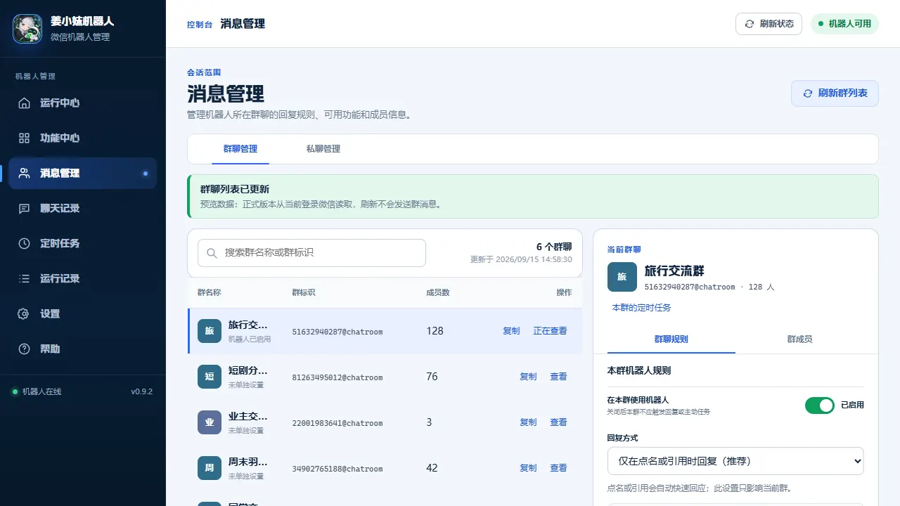
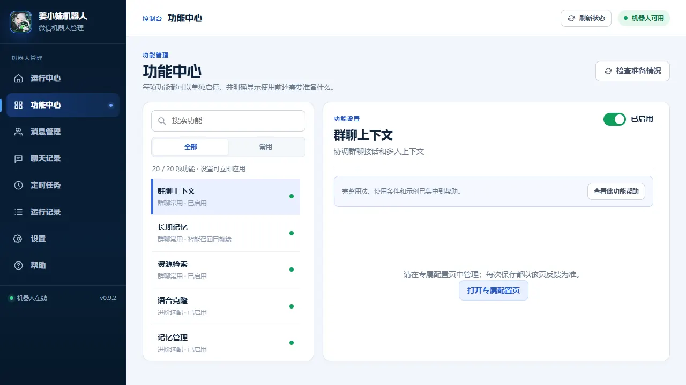

运行中心
正在检查
北京时间 UTC+8
运行中心
当前账号尚未连接
环境检查11001
未检测到微信
启动与停止
机器人状态
正在检查环境
请稍候。
连接台账
- 1微信环境待检查
- 2机器人功能未启动
- 3消息连接未连接
需要处理
错误码
常用入口
订阅与授权
当前授权
请稍候正在读取授权
正在读取本机授权状态。
- 当前套餐
- 未激活
- 到期时间（北京时间）
- —
- 绑定微信
- 尚未绑定
- 1选择授权方式
- 2激活授权
- 3确认微信账号
当前登录微信
自动回复、模型调用、主动推送和定时任务已暂停。微信与数据保留；续费后由你确认恢复，不补发暂停期间的任务。
授权编号与换机
续期时向群管理员提供授权编号；换机时提供新电脑的设备编号，领取迁移码。
授权编号
尚未激活本机设备编号
尚未生成选择套餐
免费试用可直接激活；月付、年付请入群联系管理员。模型费用自理。
正在读取套餐…
1
微信扫码领码
入群联系管理员，购买月付、年付激活码。
微信群正在读取
正在加载入群二维码…
2
兑换激活码
确认兑换内容
授权到期仍可查看配置、消息记录，并备份和导出自己的数据。
功
选择一项功能
在左侧选择后，可查看使用说明和常用设置。
群聊&私聊配置
尚未读取群聊打开本页后会读取一次，也可以随时手动刷新。
| 群名称 | 群标识 | 成员数 | 操作 |
|---|---|---|---|
| 正在准备群聊列表… | |||
尚未读取联系人请切换到私聊管理。
| 联系人 | 微信号 | 地区 | 操作 |
|---|---|---|---|
| 正在准备联系人列表… | |||
消息中心
定时任务
| 任务 / 内容 | 发送到 | 执行时间 / 下次运行 | 状态 / 最近执行 | 操作 |
|---|---|---|---|---|
| 正在读取定时任务… | ||||
已有功能任务
可以沿用原设置，也可将支持的任务迁入任务中心。迁移会停止机器人，新任务保存为暂停草稿，核对后再启用。
| 任务名称 | 来源 | 发送到 | 执行时间 | 下次运行 | 状态 | 操作 |
|---|
定时推送需单独授权。
运行记录
查看具体错误，复制问题信息给技术支持。
正在读取最近日志片段…
正在读取运行记录…
诊断工具
发送耗时
测试会向微信团队发送“发送路径测试”。
等待生成
帮助
快速开始
配置模型，再按聊天选择回复方式和功能。


正在整理功能说明…
机器人总设置
模型服务
正在读取模型服务…
尚未保存
等待读取
配置方案与模板
全局默认用于所有未指定模板的聊天。模板只需设置差异项，再到群聊或私聊中选择使用。
新建模板
机器人配置
正在读取机器人配置…
皮肤
切换后立即生效，关闭管理器后仍会保留。皮肤支持侧栏的深浅模式切换。
客户端位置
当前路径
尚未选择自动检测失败时，手动选择 Weixin.exe。
维护
安装目录
设置与记忆备份包含机器人设置、人格和长期记忆；机器人停止后可创建。
恢复备份尚无可恢复备份
安全诊断不包含密钥、聊天正文或本机路径
使用帮助
记忆数据查看和删除已保存的记忆
聊天记录清理删除指定日期以前的本机副本
软件版本v0.0.0 · 尚未检查
彻底卸载删除程序、配置、日志、备份及本机残留，聊天记录会保留